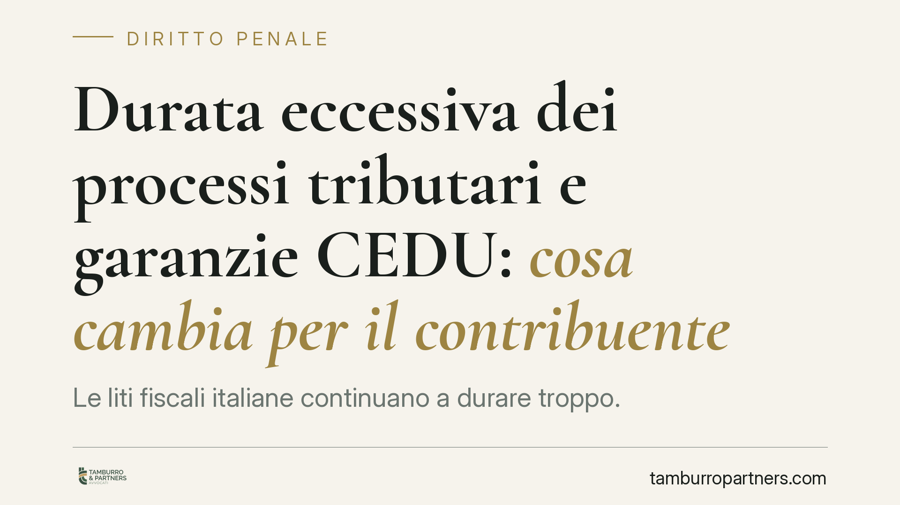

Durata eccessiva dei processi tributari e garanzie CEDU: cosa cambia per il contribuente
Le liti fiscali italiane continuano a durare troppo. Sul punto incidono due profili distinti: l'irragionevole durata del processo, tutelata dalla legge Pinto, e la qualificazione delle sanzioni tributarie, che la giurisprudenza di Strasburgo può ricondurre alla materia penale della Convenzione. Capire la differenza è decisivo per scegliere il rimedio corretto e non confondere piani che restano separati.

Il contesto
La lentezza del contenzioso tributario è un problema strutturale e ricorrente nei rapporti tra l'Italia e la Corte europea dei diritti dell'uomo. Il tema tocca due garanzie diverse della Convenzione: il diritto a un processo di durata ragionevole (art. 6 CEDU) e il diritto a un ricorso effettivo contro le violazioni (art. 13 CEDU).
Va chiarito subito un punto, perché su di esso si generano i fraintendimenti più frequenti. Un conto è la durata del giudizio; un altro è la natura della sanzione oggetto della lite. Sono profili che seguono regole proprie e attivano strumenti differenti.
Inquadramento normativo
Sul fronte della durata, l'art. 6, paragrafo 1, CEDU riconosce il diritto a una decisione in un tempo ragionevole. Nell'ordinamento interno il rimedio è la legge n. 89/2001 (legge Pinto), che consente di chiedere un'equa riparazione quando il processo si è protratto oltre i termini considerati accettabili.
Un aspetto tecnico merita attenzione: la legge Pinto tutela l'irragionevole durata a prescindere dalla natura penale della controversia. Non serve dimostrare che la sanzione abbia volto penale per accedere a questo rimedio. La natura penale rileva su un piano diverso, quello delle garanzie sostanziali e processuali che l'art. 6 CEDU riconosce nel suo volto penale (ad esempio in tema di presunzione di innocenza, diritto di difesa, divieto di doppio giudizio).
Per stabilire quando una sanzione formalmente amministrativa ricada nella materia penale della Convenzione, Strasburgo applica i cosiddetti criteri Engel (dal caso *Engel e altri c. Paesi Bassi*, 1976, poi sviluppati in materia fiscale da *Jussila c. Finlandia*, 2006). I criteri sono tre: la qualificazione formale nel diritto interno, la natura dell'illecito e la severità della sanzione.
Qui occorre precisione. La qualificazione formale interna non è di per sé decisiva: il fatto che una sanzione sia etichettata come amministrativa non esclude il volto penale. Sono il secondo e il terzo criterio — natura dell'illecito e gravità della sanzione — a risultare determinanti. Questi ultimi operano in via alternativa e possono essere cumulati quando l'esame separato non conduce a una conclusione netta.
Nell'ordinamento interno le sanzioni tributarie sono disciplinate dal D.Lgs. n. 471/1997 (sanzioni in materia di imposte dirette, IVA e riscossione) e dal D.Lgs. n. 472/1997 (principi generali). La loro qualificazione come amministrative non impedisce, caso per caso, il riconoscimento del volto penale ai fini convenzionali.
Implicazioni pratiche
Per il contribuente che affronta una lite fiscale pluriennale, la distinzione ha conseguenze concrete.
Se l'obiettivo è ottenere un indennizzo per la durata eccessiva, il percorso è quello della legge Pinto, indipendentemente dall'importo e dalla natura della sanzione contestata. È un rimedio sul tempo del processo, non sul merito della pretesa.
Se invece il tema è la tutela sostanziale — per esempio contestare un doppio binario sanzionatorio penale e amministrativo sullo stesso fatto, o invocare garanzie proprie del processo penale — allora diventa rilevante argomentare la natura penale della sanzione secondo i criteri Engel.
Un'avvertenza necessaria: una condanna di Strasburgo, o un orientamento favorevole, non produce automatismi interni. Non riforma la sentenza tributaria né cancella la pretesa fiscale. Incide sui principi applicabili e può fondare richieste di riparazione, ma il risultato dipende dalla situazione specifica.
Cosa fare in concreto
- Ricostruisci la cronologia del giudizio: data di instaurazione, gradi, udienze e tempi morti. È la base per valutare un'eventuale azione ex legge Pinto.
- Verifica i termini di decadenza per la domanda di equa riparazione: la tempestività è condizione essenziale e i termini sono rigorosi.
- Distingui i due piani: chiarisci se l'interesse è l'indennizzo per la durata o la tutela sostanziale legata alla natura della sanzione.
- Mappa le sanzioni contestate alla luce dei D.Lgs. 471 e 472/1997, valutando se ne ricorrano i presupposti per un volto penale convenzionale.
- Conserva la documentazione di ogni fase processuale e degli atti dell'Agenzia delle Entrate e degli organi accertatori, utile sia in Pinto sia nella difesa di merito.
La materia incrocia diritto tributario, convenzionale e profili penali: la scelta del rimedio va calibrata sul singolo caso, evitando di trattare come automatica una conseguenza che tale non è.
Disclaimer
Contributo informativo a cura di Tamburro & Partners - Avv. Giuseppe Tamburro. Non costituisce parere legale.
Ogni condominio ha una storia a sé.
Se gestisci un'amministrazione e vuoi un confronto su una specifica questione condominiale, scrivi allo studio. Ti rispondiamo entro un giorno lavorativo.